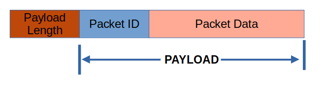

Extending Telemetrix
The Telemetrix Project comes pre-packaged with support for a fixed set of sensors and actuators. But, what if you want to add support for something outside of the base set?
Telemetrix was designed specifically to allow you to extend its capabilities to customize it to meet your needs. Before going into a little detail about the infrastructure let's look at how the client and server exchange information.
Understanding Telemetrix Data Packets
When an application wishes to control the server or when the server wishes to report data information back to the application, a Telemetrix Data Packet is formed and sent over the serial or WiFi link
For consistency, the format for both client and server packets is identical.
Let's take a look at the packet format.
Packet Format

A Telemetrix Packet consists of 3 parts. The packet length, the packet ID and the payload.
Packet ID
The packet ID contains either a command or report ID. These IDs are defined to be the same value for both client and server. This is shown in the examples below.
On the client side, command IDs are declared in private_constants.py.
When creating a command packet the command method selects the appropriate command packed ID to use.
# commands
# send a loop back request - for debugging communications
LOOP_COMMAND = 0
SET_PIN_MODE = 1 # set a pin to INPUT/OUTPUT/PWM/etc
DIGITAL_WRITE = 2 # set a single digital pin value instead of entire port
ANALOG_WRITE = 3
On the server side, the IDs are declared in the .ino file.
// Commands -received by this sketch
// Add commands retaining the sequential numbering.
// The order of commands here must be maintained in the command_table.
#define SERIAL_LOOP_BACK 0
#define SET_PIN_MODE 1
#define DIGITAL_WRITE 2
#define ANALOG_WRITE 3
The server uses the command packet ID to index into an array of function pointers used to implement the command. This array is called the command table.
command_descriptor command_table[] =
{
{&serial_loopback},
{&set_pin_mode},
{&digital_write},
{&analog_write},
When adding a new command Here is a partial list of command IDs.
Packet Length
The payload length and packet ID portions of the packet are each one byte in length. The total payload length is of variable size and is reflected in the payload length byte.
A High Level View Of Adding An Extension
Commands
Reports
Create A New Command
To command the server to perform ommands are implemented through calls to the API
Telemetrix is driven by the client and server exchanging data packets. To add new features, one must understand the structure and use of these packets.
The data packets originating from the client are called command packets.
The data packets originating from the server are called reporter packets.
The format for both command and reporter packets is the same.
Packet ID
The packet ID is used by both the client and server to locate the When Telemetrix4Arduino receives a command in the get_next_command function, all of the bytes that follow the packet ID are placed into a command_buffer for processing. The ESP-8266 server behaves in the same manner.
When a Telemetrix client receives a report, the _reporter method also places all of the bytes following the packet ID into the response_data buffer for processing.
The Packet ID
The packet ID identifies the command or report type. The packet ID drives the data processing of the system.
Building And Sending A Command Packet
To associate a GPIO digital input pin with a DHT device, the client application calls the set_pin_mode_dht method.
The set_pin_mode_dht method creates a list containing command packet values of the command ID, the GPIO pin-number and the DHT device type.
command = [PrivateConstants.DHT_NEW, pin, dht_type]
self._send_command(command)
The set_pin_mode_dht method then calls the _send_command utility method. The length of the command packet is calculated and placed as the first byte of the command. The command is then converted to a byte string and sent across the link.
def _send_command(self, command):
"""
This is a private utility method.
:param command: command data in the form of a list
"""
# the length of the list is added at the head
command.insert(0, len(command))
send_message = bytes(command)
if self.serial_port:
try:
self.serial_port.write(send_message)
except SerialException:
if self.shutdown_on_exception:
self.shutdown()
raise RuntimeError('write fail in _send_command')
elif self.ip_address:
self.sock.sendall(send_message)
else:
raise RuntimeError('No serial port or ip address set.')
The command variable is list populated with the command ID, DHT_NEW, the GPIO pin number, and a dht_type.
For commands, the server maintains an array of command handler function pointers. The packet ID is used as an index into the array to retrieve its associated command handler function.
For reports, the client maintains a dictionary of report handler methods. The packet ID is the key used to retrieve the associated report handling method.
Preparing For The New Extension
Before jumping directly into coding, you should consider a few things when designing your extension.
-
Review the library's API to select the methods you wish to support.
You may support the complete set of library functions or a subset. For this example, only the minimum functions will be supported to help keep things as simple as possible.
The library chosen for the DHT is the DHTstable library.
-
Determine if there is a time constraint on accessing the device.
The DHT 22, for example, can only be read every 2 seconds to receive valid data. We will demonstrate how to support this restriction in a non-blocking manner.
-
Determine the number of instances of the device you wish to support.
For the DHT 22, up to six devices are supported.
Implementing The New Extension
Design Decisions
For the DHT, a new command method, called set_pin_mode_dht, is added to the client, and an associated command handler is created on the server.
A new report is added for the server to notify the client of the latest humidity and temperature values retrieved from the DHT device. An associated report handler is added to the client.
The DHT feature is implemented on the server using the following DHTStable methods:
- read11
- read22
- getHumidity
- getTemperature
Note that this is only a subset of available methods provided by DHTStable.
Adding A New Command
Client Side
First, add a new command ID to private_constants.py.
# commands
# send a loop back request - for debugging communications
LOOP_COMMAND = 0
SET_PIN_MODE = 1 # set a pin to INPUT/OUTPUT/PWM/etc
DIGITAL_WRITE = 2 # set a single digital pin value instead of entire port
ANALOG_WRITE = 3
MODIFY_REPORTING = 4
GET_FIRMWARE_VERSION = 5
ARE_U_THERE = 6 # Arduino ID query for auto-detect of telemetrix connected boards
SERVO_ATTACH = 7
SERVO_WRITE = 8
SERVO_DETACH = 9
I2C_BEGIN = 10
I2C_READ = 11
I2C_WRITE = 12
SONAR_NEW = 13
DHT_NEW = 14
DHT_NEW is the command that will be sent to the server.
Server Side
Adding A New Report
Server Side
Client Side
Four Steps To Add The New Command And Its Report
1. Modify The Client
For DHT support, we are going to add a set_pin_mode_dht command. This command will instruct the server add a DHT to its list of DHT devices that it needs to monitor.
On the client side, this is the only new method we need to add.
On the server side, we will need to add code to accept the new command. The server also needs code to build a report message when it monitors the DHT devices.
The assumption is that the new extension will ultimately result in continuous report generation without any additional API calls.
Your device may have different requirements, and you will need to adjust things for your particular case.
Modifying The Client For The New Command
For DHT support, a single command will be added to associate a GPIO pin with a sensor. To be consistent, we will call this command set_pin_mode_dht.
1. Add A Constant Value For The New Command
Edit the private_constants.py file and add a value for the new command.
Below are the steps used for adding the DHT extension. We will use the telemetrix client for illustration purposes. Modifying telemetrix-aio would take a similar approach.
The following sections discuss each step in detail.
-
Add a new client command to be transmitted to the server.
-
Add a new command handler on the server to process the command.
-
Add a new function to the server to continuously monitor the device and generate data reports.
-
Add a new function to the client to handle the new incoming reports.
Adding A New Client Command
1. Define A New Command Value
To add a new command to the API, define a new command value in private_constants.py.
class PrivateConstants:
"""
This class contains a set of constants for telemetrix internal use .
"""
# commands
# send a loop back request - for debugging communications
LOOP_COMMAND = 0
SET_PIN_MODE = 1 # set a pin to INPUT/OUTPUT/PWM/etc
DIGITAL_WRITE = 2 # set a single digital pin value instead of entire port
ANALOG_WRITE = 3
MODIFY_REPORTING = 4
GET_FIRMWARE_VERSION = 5
ARE_U_THERE = 6 # Arduino ID query for auto-detect of telemetrix connected boards
SERVO_ATTACH = 7
SERVO_WRITE = 8
SERVO_DETACH = 9
I2C_BEGIN = 10
I2C_READ = 11
I2C_WRITE = 12
SONAR_NEW = 13
DHT_NEW = 14 #<-----------New Command For the DHT!!!!!!!!!!!!!
STOP_ALL_REPORTS = 15
SET_ANALOG_SCANNING_INTERVAL = 16
Here the command DHT_NEW was added.
2. Define the maximum number of DHT devices to be supported.
Add this value to private_contants.py
# Maximum number of dht devices allowed
MAX_DHTS = 6
3. Add storage to telemetrix.py to keep track of the number of currently active DHT devices and their associated callback functions.
self.dht_callbacks = {}
self.dht_count = 0
The dht_callbacks dictionary uses the pin number for the DHT device as a key to retrieve its associated callback function.
The dht_count variable keeps track of the number of currently active DHT devices.
4. Add a command method to telemetrix.py to command the server to add a new DHT device.
def set_pin_mode_dht(self, pin, callback=None):
"""
:param pin: connection pin
:param callback: callback function
Error Callback: [Callback 0=DHT REPORT, DHT_ERROR=0, PIN, Error Number, Time]
Valid Data Callback: Callback 0=DHT REPORT, DHT_DATA=1, PIN, Humidity, Temperature Time]
"""
if not callback:
if self.shutdown_on_exception:
self.shutdown()
raise RuntimeError('set_pin_mode_dht: A Callback must be specified')
if self.dht_count < PrivateConstants.MAX_DHTS - 1:
self.dht_callbacks[pin] = callback
self.dht_count += 1
command = [PrivateConstants.DHT_NEW, pin]
self._send_command(command)
else:
if self.shutdown_on_exception:
self.shutdown()
raise RuntimeError(f'Maximum Number Of DHTs Exceeded - set_pin_mode_dht fails for pin {pin}')
The name set_pin_mode_dht, was chosen to stay consistent with the telemetrix naming conventions. Because DHT devices generate reports, we ensure that the user specifies a callback function for the device. The callback is added to dht_callbacks, and the number of active DHT devices is incremented. If the maximum number of DHT devices is exceeded, a RuntimeError is raised. Otherwise, a command data packet is built and sent to the server.
NOTE: The _send_command method will automatically calculate the payload length and append it to the packet.
Modifying The Server
Adding A New Server Command Handler
1. Add the library to the list of #includes
#include <Arduino.h>
#include "Telemetrix4Arduino.h"
#include <Servo.h>
#include <Ultrasonic.h>
#include <Wire.h>
#include <dhtnew.h> // Adding dhtnew
2. Create A Name For The New Command Handler Function And Declare It As Extern
// Create forward references for all the command handlers.
// If you add a new command, you must add the command handler
// here as well.
extern void serial_loopback();
extern void set_pin_mode();
extern void digital_write();
extern void analog_write();
extern void modify_reporting();
extern void get_firmware_version();
extern void are_you_there();
extern void servo_attach();
extern void servo_write();
extern void servo_detach();
extern void i2c_begin();
extern void i2c_read();
extern void i2c_write();
extern void sonar_new();
extern void dht_new(); // The New Command Handler
extern void stop_all_reports();
extern void set_analog_scanning_interval();
3. Define A Value For The Command That Matches The Value Defined In The Client
// Commands -received by this sketch
// Add commands retaining the sequential numbering.
// The order of commands here must be maintained in the command_table.
#define SERIAL_LOOP_BACK 0
#define SET_PIN_MODE 1
#define DIGITAL_WRITE 2
#define ANALOG_WRITE 3
#define MODIFY_REPORTING 4 // mode(all, analog, or digital), pin, enable or disable
#define GET_FIRMWARE_VERSION 5
#define ARE_U_THERE 6
#define SERVO_ATTACH 7
#define SERVO_WRITE 8
#define SERVO_DETACH 9
#define I2C_BEGIN 10
#define I2C_READ 11
#define I2C_WRITE 12
#define SONAR_NEW 13
#define DHT_NEW 14 // The Command value
#define STOP_ALL_REPORTS 15
#define SET_ANALOG_SCANNING_INTERVAL 16
4. Update The Command Table With The New Command
The data structures are provided below. To update the table, increase the size of the command_table to accept the new command.
The command_table contains pointers to the command functions. Note that you may optionally specify the command without the & operator. The compiler interprets the entry the same way in both cases.
The command value defined above, the value 14 for DHTNEW, acts as an index into the command_table when fetching the function pointer. Make sure to order the command_table appropriately.
// When adding a new command update the command_table.
// The command length is the number of bytes that follow
// the command byte itself, and does not include the command
// byte in its length.
// The command_func is a pointer the command's function.
struct command_descriptor
{
// a pointer to the command processing function
void (*command_func)(void);
};
// An array of pointers to the command functions
// If you add new commands, make sure to extend the siz of this
// array.
command_descriptor command_table[17] =
{
{&serial_loopback},
{&set_pin_mode},
{&digital_write},
{&analog_write},
{&modify_reporting},
{&get_firmware_version},
{&are_you_there},
{&servo_attach},
{&servo_write},
{&servo_detach},
{&i2c_begin},
{&i2c_read},
{&i2c_write},
{&sonar_new},
{dht_new}, // The new function
{stop_all_reports},
{set_analog_scanning_interval}
};
5. Create An Array Of DHT Descriptor Structures To Support The Feature
#define MAX_DHTS 6 // max number of devices
// DHT Descriptor
struct DHT
{
uint8_t pin;
unsigned int last_value; // this value is reserved for future use
// if a report should be generated
DHTNEW *dht_sensor;
};
// an array of dht descriptor objects
DHT dhts[MAX_DHTS];
byte dht_index = 0; // index into the dhts array
6. Create The Command Handler Function
/***********************************
* DHT adding a new device
**********************************/
void dht_new()
{
int d_read;
// report consists of:
// 0 - byte count
// 1 - report type
// 2 - dht report subtype
// 3 - pin number
// 4 - error value
// pre-build an error report in case of a read error
byte report_message[5] = {4, (byte)DHT_REPORT, (byte)DHT_READ_ERROR, (byte)0, (byte)0};
dhts[dht_index].dht_sensor = new DHTNEW((uint8_t)command_buffer[0]);
dhts[dht_index].dht_sensor->setType();
dhts[dht_index].pin = command_buffer[0];
d_read = dhts[dht_index].dht_sensor->read();
// if read return == zero it means no errors.
if (d_read == 0)
{
dht_index++;
}
else
{
// error found
// send report and release the dht object
report_message[3] = command_buffer[0]; // pin number
report_message[4] = d_read;
Serial.write(report_message, 5);
delete (dhts[dht_index].dht_sensor);
}
}
When a DHT is added, a read is performed to see if there are any issues with the device. If the read returns a zero, then there are no issues and nothing to report. However, a non-zero value is an error indicator. The error value is returned as a report.
Add A New Server Function To Continuously Monitor The Device
1. Create A Device Scanner Function For Active DHT Devices
We are going to create the scan_dhts scanning function and then call the function in the loop section of the sketch.
The scan_dhts function prebuilds a report_message buffer assuming that the read will return valid data. The format for the report is shown in the comments for the function. For valid data, the floating-point values are copied to the buffer as bytes, and a report is sent across the link.
If an error is returned as a result of the read, byte 2 of the report, the report sub-type is changed from DHT_DATA to DHT_ERROR, and the payload length is changed to a value of 4 bytes. The report is then sent across the serial link.
void scan_dhts()
{
// prebuild report for valid data
// reuse the report if a read command fails
// data returned is in floating-point form - 4 bytes
// each for humidity and temperature
// byte 0 = packet length
// byte 1 = report type
// byte 2 = report sub type - DHT_DATA or DHT_ERROR
// btye 3 = pin number
// byte 4 = humidity high order byte for data or error value
// byte 5 = humidity byte 2
// byte 6 = humidity byte 3
// byte 7 = humidity byte 4
// byte 8 = temperature high order byte for data or
// byte 9 = temperature byte 2
// byte 10 = temperature byte 3
// byte 11 = temperature byte 4
byte report_message[12] = {11, DHT_REPORT, DHT_DATA, 0, 0, 0, 0, 0, 0, 0, 0, 0};
byte d_read;
float dht_data;
// are there any dhts to read?
if (dht_index)
{
// is it time to do the read? This should occur every 2 seconds
dht_current_millis = millis();
if (dht_current_millis - dht_previous_millis > dht_scan_interval)
{
// update for the next scan
dht_previous_millis += dht_scan_interval;
// read and report all the dht sensors
for (int i = 0; i < dht_index; i++)
{
report_message[3] = dhts[i].pin;
// get humidity
dht_data = dhts[i].dht_sensor->getHumidity();
memcpy(&report_message[4], &dht_data, sizeof dht_data);
// get temperature
dht_data = dhts[i].dht_sensor->getTemperature();
memcpy(&report_message[8], &dht_data, sizeof dht_data);
Serial.write(report_message, 12);
// now read do a read for this device for next go around
d_read = dhts[i].dht_sensor->read();
if (d_read)
{
// error found
// send report
//send_debug_info(1, 1);
report_message[0] = 4;
report_message[1] = DHT_REPORT;
report_message[2] = DHT_READ_ERROR;
report_message[3] = dhts[i].pin; // pin number
report_message[4] = d_read;
Serial.write(report_message, 5);
}
}
}
}
}
2. Scan The Active DHT Sensors In The Sketch Loop Function
void loop()
{
// keep processing incoming commands
get_next_command();
if(! stop_reports){ // stop reporting
scan_digital_inputs();
scan_analog_inputs();
scan_sonars();
scan_dhts(); scan the active DHT sensors.
}
}
Add a New Client Report Handler
1. Add An Entry For The DHT Report To The Report Dispatch Dictionary
The report_dispatch dictionary uses report ID values as a key to look up the handler for the incoming report. The dictionary update method is used when adding a new entry into the dispatch dictionary.
# The report_dispatch dictionary is used to process
# incoming report messages by looking up the report message
# and executing its associated processing method.
self.report_dispatch = {}
# To add a command to the command dispatch table, append here.
self.report_dispatch.update({PrivateConstants.LOOP_COMMAND: self._report_loop_data})
self.report_dispatch.update({PrivateConstants.DEBUG_PRINT: self._report_debug_data})
self.report_dispatch.update({PrivateConstants.DIGITAL_REPORT: self._digital_message})
self.report_dispatch.update({PrivateConstants.ANALOG_REPORT: self._analog_message})
self.report_dispatch.update({PrivateConstants.FIRMWARE_REPORT: self._firmware_message})
self.report_dispatch.update({PrivateConstants.I_AM_HERE_REPORT: self._i_am_here})
self.report_dispatch.update({PrivateConstants.SERVO_UNAVAILABLE: self._servo_unavailable})
self.report_dispatch.update({PrivateConstants.I2C_READ_REPORT: self._i2c_read_report})
self.report_dispatch.update({PrivateConstants.I2C_TOO_FEW_BYTES_RCVD: self._i2c_too_few})
self.report_dispatch.update({PrivateConstants.I2C_TOO_MANY_BYTES_RCVD: self._i2c_too_many})
self.report_dispatch.update({PrivateConstants.SONAR_DISTANCE: self._sonar_distance_report})
self.report_dispatch.update({PrivateConstants.DHT_REPORT: self._dht_report})
2. Create The Report Handler
This function builds a report, and looks up the callback function for the DHT device using the reported pin number as the key and calls the callback function.
def _dht_report(self, data):
"""
This is the dht report handler method.
:param data: data[0] = report sub type - DHT_DATA or DHT_ERROR
data[1] = pin number
data[2] = humidity high order byte or error value if DHT_ERROR
data[3] = humidity byte 2
data[4] = humidity byte 3
data[5] = humidity byte 4
data[6] = temperature high order byte for data
data[7] = temperature byte 2
data[8] = temperature byte 3
data[9] = temperature byte 4
"""
if data[0]: # DHT_ERROR
# error report
# data[0] = report sub type, data[1] = pin, data[2] = error message
if self.dht_callbacks[data[1]]:
# Callback 0=DHT REPORT, DHT_ERROR=0, PIN, Error Number, Time
message = [PrivateConstants.DHT_REPORT, data[0], data[1], data[2], time.time()]
self.dht_callbacks[data[1]](message)
else:
# got valid data DHT_DATA
f_humidity = bytearray(data[2:6])
f_temperature = bytearray(data[6:])
message = [PrivateConstants.DHT_REPORT, data[0], data[1],
(struct.unpack('<f', f_humidity))[0],
(struct.unpack('<f', f_temperature))[0],
time.time()]
self.dht_callbacks[data[1]](message)
Coping With Various Data Types With A Byte-Oriented Serial Link
When data is sent across the serial link, it is sent as a series of bytes. Some data types, such as integers and floating-point values, are larger than a single byte. For the Telemetrix Project, an integer value is two bytes in length, and a floating-point value is four bytes in size.
The multi-byte values are disassembled into individual bytes before transmission when sending a value larger than a byte in length. When received, the individual bytes are reassembled into the original multi-byte value. For all data items that must be represented in this manner, by convention, the most significant byte (MSB) is the first byte transmitted, followed by all subsequent bytes in descending byte order.
For example, the DHT 22 sensor expresses temperature and humidity values as floating-point. To send a report containing these values to the client, they must first be converted to individual bytes. Using a humidity/temperature report as an example, let's see how this is done. On the server side. After data is retrieved from the DHT sensor, a report message is created using the following format:
// byte 0 = packet length
// byte 1 = report type
// byte 2 = report sub type - DHT_DATA or DHT_ERROR
// byte 3 = pin number
// byte 4 = dht type
// byte 5 = humidity positivity flag 0=positive, 1= negative
// byte 6 = temperature positivity flag 0=positive, 1= negative
// byte 7 = humidity integer portion
// byte 8 = humidity fractional portion
// byte 9 = temperature integer portion
// byte 10= temperature fractional portion
Although both temperature and humidity values are reported as floating-point values that
are 4 bytes in length each, we can use a "trick" to send these values using 3 bytes each.
We can do this because the integer portion, the value on the
left side of the decimal point, and the fractional portion, the value on the right
side of the decimal, are valued at less than 256. As a result, we can send the
integer and fractional portions as bytes. However, we do still need to be able to
differentiate between positive and negative values. The value's positivity is checked,
and a flag is set to indicate if the value is positive or negative.
As a result, a floating point value is represented in three bytes instead
of four, making the data packet more efficient for transmission across the link.
Using humidity as an example, here is the code that
performs this conversion:
float j, f;
float humidity = dhts[i].dht_sensor->getHumidity();
if (humidity >= 0.0) {
report_message[5] = 0;
}
else {
report_message[5] = 1;
}
f = modff(humidity, &j);
report_message[7] = (uint8_t)j;
report_message[8] = (uint8_t)(f * 100);
The humidity is retrieved by calling the DHTStable library method, getHumdity. The humidity's positivity is checked, and the positivity flag is appropriately set within the report message. Then using the C library function modff, the integer portion of the value is separated from the fractional part. The integer portion is returned in "j," and the fractional part is returned in "f." The fractional part is multiplied by 100 to convert the value to an integer.
On the client side, the converted bytes need to be reassembled into floats before providing the data values to the user application.
f_humidity = float(data[5] + data[6] / 100)
if data[3]:
f_humidity *= -1.0
Here, we retrieve the integer and fractional portions from the report message. The fractional part is divided by 100 to return it to a floating-point value, and then the integer and fractional values are added together. Lastly, the positivity flag is checked to determine if the value is positive or negative and adjusted appropriately.
Copyright (C) 2020-21 Alan Yorinks. All Rights Reserved.